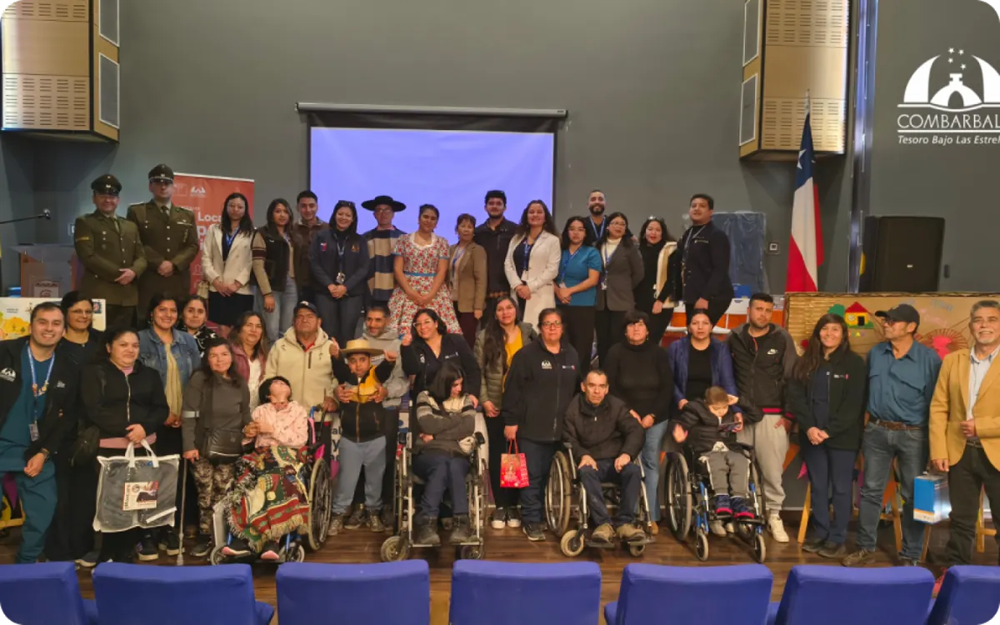
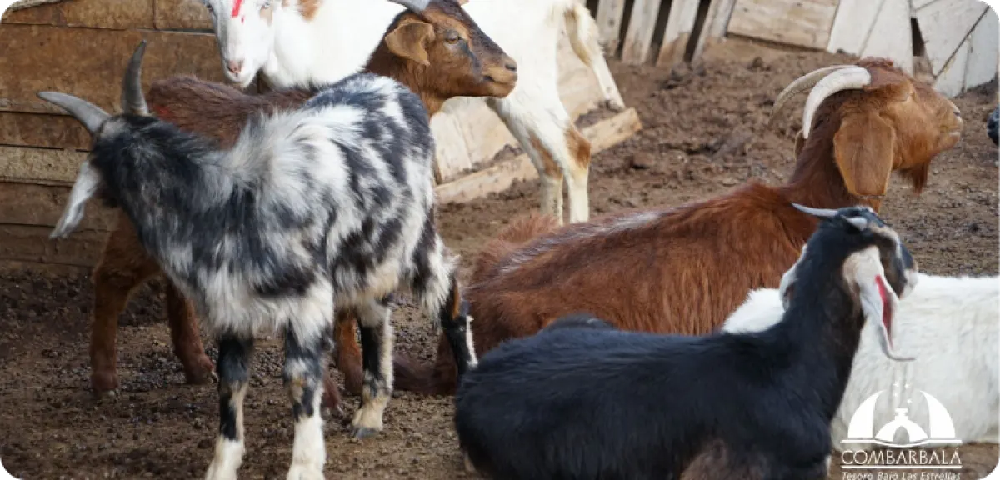
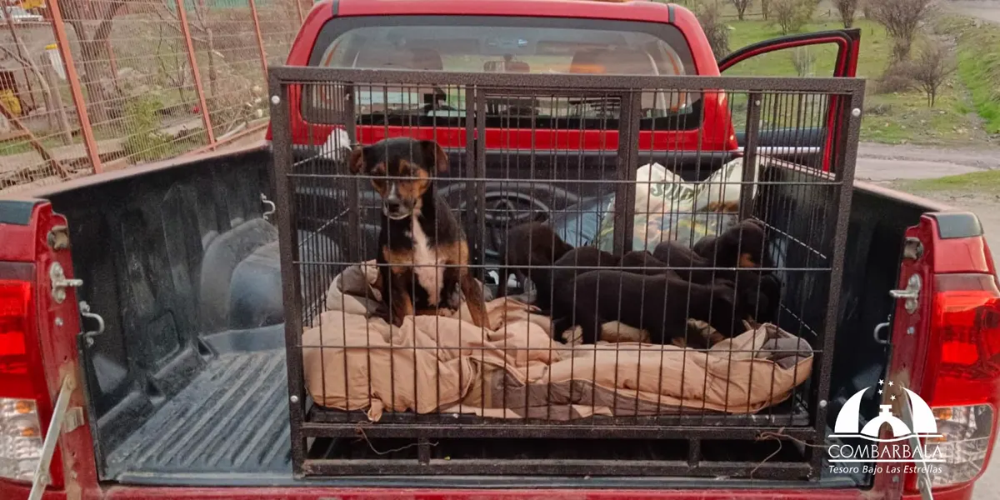
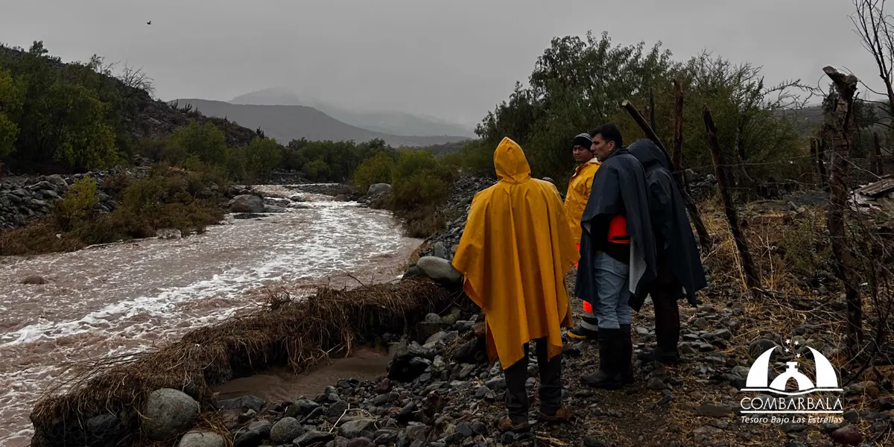
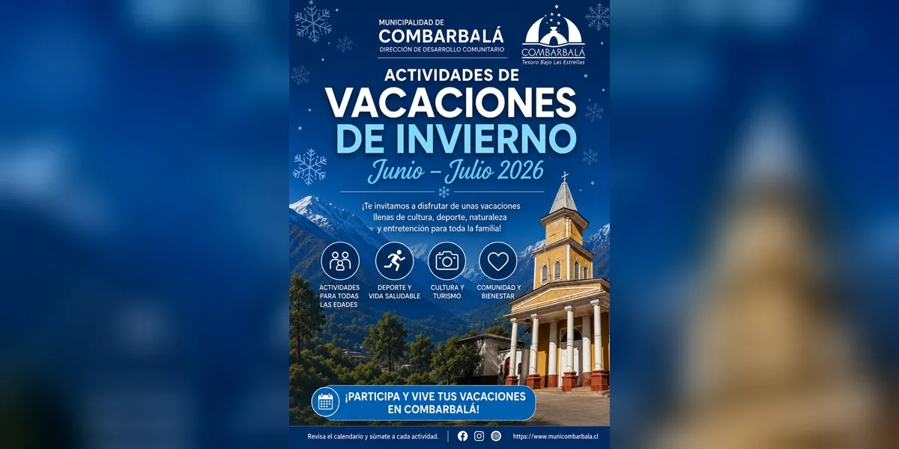

Noticias de la comunidad
Infórmate sobre actividades, anuncios y novedades de la Ilustre Municipalidad de Combarbalá y su comunidad.
Noticia destacada

Social
El programa entrega ayudas técnicas que facilitan el día a día de las personas cuidadoras y de sus familiares.
Leer noticia completaÚltimas noticias
Ordenadas por fecha
Cultura
Jóvenes representantes de Combarbalá llevan el orgullo de su tierra al escenario nacional de la cueca.
Leer noticia
Salud
Reconocimiento institucional a quienes trabajan por la salud materno-infantil de la comuna.
Leer noticia
Cultura
Combarbalá presente en el escenario nacional con sus mejores representantes de la cueca tradicional.
Leer noticia
Educación
La comunidad educativa se une en torno a los valores de la paz y la convivencia escolar.
Leer noticia
Vecinos
Información práctica para que los vecinos ejerzan sus derechos ante problemas de conectividad.
Leer noticia

Mundo rural
El SAG y la Municipalidad llevan servicios directamente al sector rural para apoyar a los crianceros locales.
Leer noticia

Seguridad
La Oficina de Seguridad Municipal y una fundación local trabajaron juntas en un rescate animal.
Leer noticia

Seguridad
La comuna formaliza su plan para prevenir y responder ante emergencias y desastres.
Leer noticia

Cultura
Revisa las actividades programadas para las vacaciones de invierno en la comuna.
Leer noticia
No hay noticias con esos filtros
Prueba con otra categoría o palabra clave.
Contacto institucional
- DirecciónPlaza de Armas Nro. 438, Combarbalá
- Mesa central53 2655500
- Horario de atenciónLun–Jue 8:30–17:30 | Vie 8:30–16:30
Ir a contacto general
Relación institucional
Accede a documentos públicos, declaraciones de interés y patrimonio, y otros antecedentes de interés ciudadano.
Ver documentos